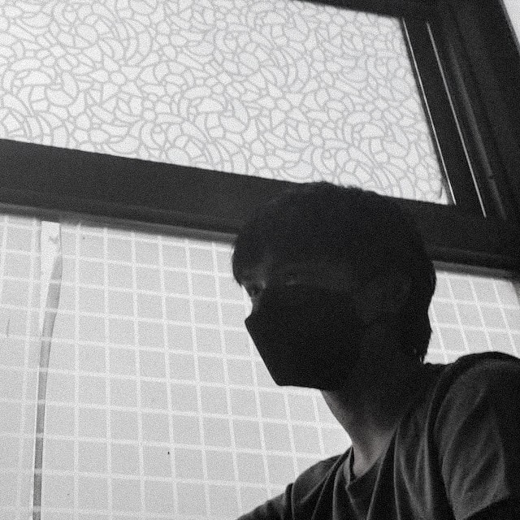

About Me
My name is Josiah Coby Bayrante Magay, I am 18 years old, I live in Metro Manila, Taguig City. I am currently studying Adamson University Bachelor of Science in Information Technology. I am passionate about coding because it challenges me to create and find solutions to problems. I'm also very passionate about music such as playing guitar, drums, and bass because it is one way to express my emotions and feelings.